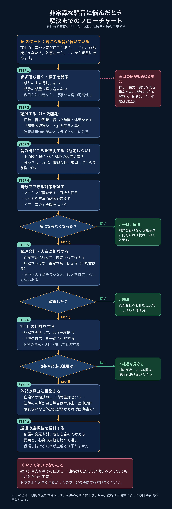

🧭
この記事の要点
- いきなり文句を言いに行かず、まず落ち着いて記録することから始めるのが基本です。
- 相談のときは、感情ではなく「いつ・どんな音が・どれくらい」という記録が助けになります。
- 壁を叩いて仕返しする、直接対決する、といった行動はトラブルを大きくします。
🧭 フローチャートで見る解決までの流れ

📝 フローチャートの内容（文章版）
- まず落ち着く：その場で文句を言いに行かない。危険や身の危険を感じる場合は、警察（110番／警察相談専用電話 #9110）へ。
- 記録する：1〜2週間を目安に、日時・時間帯・音の種類・体感をメモする。可能なら録音も。記録は相談のときの材料になります。
- 出どころを推測する：上の階とは限りません。断定せず、可能性として考える。
- 自分でできる対策：耳栓やマスキング音、家具の配置換えなど。気にならなくなれば、一旦解決です。
- 管理会社・大家に相談する：記録を持って、困っている事実を冷静に伝える。改善すれば解決です。
- 2回目の相談：改善しない場合は、記録を続けたうえで再度相談する。対応が進んでいる場合は、経過を見守ります。
- 外部の窓口：市区町村の相談窓口、消費生活センター、弁護士や民事調停など。体調に影響が出ている場合は医療機関も検討します。
- 最後の選択肢：部屋の変更や引っ越しは、費用も大きく最終手段です。焦って決めず、順番に進めてから検討します。
🚫 やってはいけないこと
- 壁や天井を叩いて仕返しする（壁ドン）
- 相手の部屋へ直接文句を言いに行く・大声で怒鳴る
- 相手が特定できる内容をSNSなどに投稿する
- 出どころを断定して決めつける
これらはトラブルを大きくしたり、自分が加害側になったりする原因になります。困ったときほど、記録と相談の順番を守ることが大切です。
🔗 関連記事
⚠️ 注意
このページの内容は、一般的な流れの目安であり、法律の判断や医療的なアドバイスではありません。個別の事情によって適切な対応は変わります。大きなトラブルや法的な判断が必要な場合は、専門家や公的な相談窓口をご利用ください。